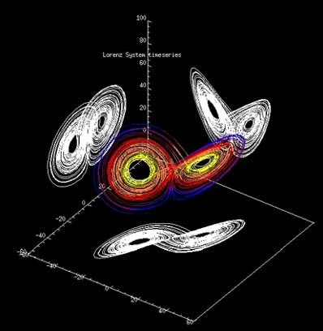

chaos cascade
last modified on jan 29, 2025
my second attempt at writing a blog, the first one i wrote looked more like some chaos caused by a child. however, i kind of figured it out. everything on paper seems childish, more like some nonsense an old man or a 9-year-old might talk about.
putting all this in the trash can and coming to the topic i am here to write about: the chaos in the nature of the universe and how, once this chaos undergoes a chain reaction, it forms a ‘chaos cascade.’
understanding the nature of chaos
what i am talking about is this so-called unpredictability that catches us off guard many times, the unpredictability that might be caused by a certain unfold of events that don’t usually take place every day, these events or actions might seem very seamless, but they aren't. just like you and me, as humans, not everyone cares whether we exist or not. if either case were true, for them, it might still seem seamless, but in reality, it truly isn’t.
i might as well tell you about chaos theory, which also talks about this. giving a short history of this theory, it originated from the lorenz attractor, the face of Chaos Theory. So what’s the lorenz attractor? one fine day, a gentleman named Edward Lorenz was doing his usual study on the weather system. he used a set of equations related to atmospheric dynamics and experimented by slightly changing the initial values every time. every time he did so, he found something very intriguing, something he wasn’t expecting. he found chaos. he discovered that the outcomes of the equation differed vastly every time. to explain it using a figure of speech, imagine a butterfly flapping its wings in one part of the world, potentially causing a tornado or something very different somewhere else.

when plotted on a graph, the equation looked pretty beautiful. the solutions he found were known as the lorenz attractor, which kind of attracts chaos, and it’s the same way with our lives. maybe you give a lottery ticket to a beggar (which usually no one does), and who knows? The next day, he might be a millionaire or a billionaire. what this chaos suggests is that even a small deviation from the norm can cause something vastly different to happen. that’s what chaos theory is all about.
the chaos cascade
now, when chaos keeps happening repeatedly over time, forming a chain reaction, it becomes the chaos cascade-or, say, the new normal. what we are living in right now is a chaos cascade, and to break this chaos cascade, we have to introduce another chaos. But the simplest irony is that if every chaos enters the chaos cascade, the chain reaction never stops. We never step out of this chaos cascade, and we never will.
you see, chaos is not about bombarding anything until it looks like a mess. chaos is the subtle start of a change that is about to unravel. at first, it doesn’t look like a mess, but by the time we realize it, we are already a part of the ultimate chaos cascade without noticing it in the first place. we are surrounded by chaos, and the only way to break it is to cause another chaos. But it doesn’t go as we think, it acts like an endless equilibrium that never ends.
the endless cycle of chaos
so now you know a little more than you usually do. but the real question is, can we ever escape chaos? the chaos might seem like a simple wave of wind, but it won’t take long to form a tornado and cage you within itself. perhaps every effort to break the chaos cascade just fuels another one, an infinite loop, an equilibrium that resets itself. maybe the key isn’t breaking it but understanding how to navigate it.
see ya, folks. peace.